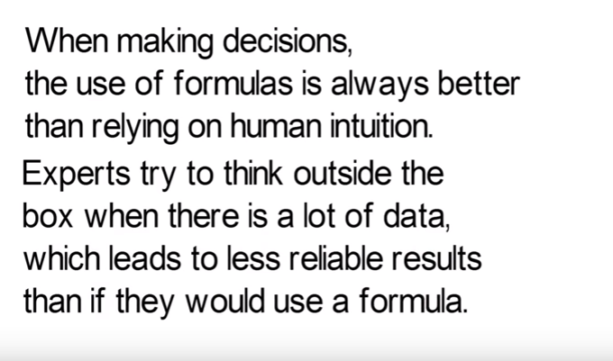

Other useful concepts not documented yet
Many of these are "Mental Models" taken from Gabriel Weinberg's list, or from Farnam Street coverage of Charlie Munger's lists.
"All models are wrong, some are useful"... hopefully some of these are useful...
Ray Dalio in his book "Principles" talks about how with experience you begin to recognise things as "another one of those".
- "By and Large" (Ray Dalio)
- "Everybody has a plan til they get punched in the mouth"
- "Maker's v Manager's Schedule"
- "Mr Market" (markets characterized as moody neighbour)
- "Never use a $5 word where a 10c word will do"
- (dis)Proportionate Response
- (Un)Forced Error
- 0,1,infinity
- Opportunity Cost
- Ability to entertain a thought without accepting/rejecting
- Activation Energy
- Active Listening
- Ad Hominem
- Adaptation
- Addiction
- ADR (Alternative dispute resolution)
- Averse Selection (e.g. the tendency of those likely to experience a loss to seek coverage.)
- Age-related Personality Changes
- Agency Problem
- Aleotropic
- Algebraic Equivalence
- Algorithms
- Alice & Bob
- Alloying 2+2 != 4
- Amdahl's law of optimization
- Anecdotal reasoning
- Anthropomorphism
- Aperiodic tiling
- Apophenia
- Appeal to emotion
- Appeasement
- Approximately
- Arbitrage
- Assumptions/Implications
- Asymmetric Warfare
- Attrition Warfare
- Automation
- Availability heuristic
- Back of the envelope
- Bandwagon
- Bansho (Japanese learning system focused on problem solving)
- Barriers to Entry (moat/draw bridge)
- Base Rate
- Basic Strategy (Blackjack)
- Batch size optimum shifts over time
- BATNA (best alternative to negotiated agreement)
- Baye's Theorem and background risk (base case)
- Bayesian Updating
- Bias for Action
- Bias for Incentives ...when his paycheck
- Big-O
- Bill of materials
- Binary Search
- Birth
- Black box v white box (knowledge/ignorance of internals)
- Black Swan
- Blindspots
- Bluffing
- Boids/Flocking
- Boiling a frog
- Boolean Logic
- Bottlenecks
- Box and Wire Diagrams
- Breakthrough (product, idea, marketing, innovation)
- Bribery
- Brownian motion
- Bug Out Bag
- Build v Buy
- Bullwhip Effect
- Burden of Proof
- Business Case
- Butterfly Effect
- Bystander effect / not my job
- Capital Allocation Options
- Cargo Cult
- Catalyst, enabling, kindling, fire-starter
- Causal Loop Diagrams
- Centralized/Decentralized
- Chain Reaction - domino effect - Cascade
- Chasing v Chased
- Chilling Effect
- Churn
- Circle of competence
- Clique
- Cognitive Biases
- Cognitive Dissonance
- Combinatorial Explosion
- Commandos/Infnatry/Police
- Commitment and consistency bias
- Comparative advantage (and "unique value proposition")
- Competition v Cooperation
- Competitive Advantage
- Complex Adaptive System
- Composability (componentry, reason about it in isolation)
- Compounding (interest)
- Confidence interval
- Confirmation bias
- Conflict of Interest
- Consensus
- Conspicuous Consumption
- Contagion/Virality
- Containment
- Context
- Contingency Plans
- Convergent thinking
- Cooperation Symbiosis
- Core Competency
- Correlated risk, and uncorrelated risk
- Correlation != Causation (xkcd/552
- Corruption
- Cost-Benefit analysis
- Counter-example
- counter-insurgency
- Creative Destruction
- Creativity
- Critical mass, tipping point, activation energy
- Critical Path
- Criticality liquid-solid
- Cryptography
- Culture
- Curiosity instinct
- Curse of Knowledge (COIK)
- Dark UX Patterns
- Data Structures
- De-risking early
- Dead reckoning
- Death
- Decision tree
- Deep learning
- Delegation
- Deliberate Practice
- Delusions
- Denial
- Dependencies
- Design patterns
- Diminishing returns
- Directed Graph (+/- Acyclic)
- Directly responsible individual
- Discovery
- Discrete/continuous
- Diseconomies of Scale
- Displacement (of products/ideas in markets)
- Disruptive innovation
- Distort due to like/love/dislike/hate
- Distributions: normal, exponential, cauchy, central limit theorem, heavy tailed, long-tailed, fat-tailed
- Divergent Thinking
- Divide and Conquer
- Division of Labor
- Double Check v Double Do
- Double Entry book keeping
- Downside risk (and upside) (and 'unlimited' of either)
- Dunbar's numbers (150 people/strangers)
- Dunning-Kruger Effect
- Early = Wrong
- Early Wins
- Echo Chamber
- Economies of Scale
- Ecosystems
- Effective Altruism
- Efficiency Measures
- Efficient Market Hypothesis
- Ego v Track Record
- Elephant Insurance Horn
- Emergence
- Engine (for business modelling)
- Entertainment craving/Stimulus seeking
- Entropy
- Envy and jealousy
- Eponymous laws in general
- Ergodicity
- Error correction (signal processing)
- Eventualities
- Evolution by Natural Selection
- Exaptation - reuse one trait for something else
- Executive Cover
- Exit Strategy
- Expected Value
- Expert System
- Explanatory Power
- Exponential
- Externalities
- Extinction
- Extraordinary claims require extraordinary evidence
- Extrapolation
- Extremes
- Fail fast
- Fail to account for base rates
- fairness preference
- False conjunctions
- False dichotomy
- False positive/negative
- Falsification/confirmation bias
- Familiarity (mere)
- Family v Government
- Fear of the Unknown
- Feedback loops (positive/negative/runaway/damping(diminishing)/ringing/bouncing(oscillating)
- Filter/sort/group/select/join
- Fire and forget
- First in the Mind v Market
- First Mover (Dis)Advantage
- First Principles
- First-conclusion bias
- Fitness function
- Flow chart - decision tree
- Flywheel (momentum and efficiency)
- FMEA - Failure Mode and Effects Analysis (FMEA)
- FOMO
- Force amplification, leverage
- Forcing function
- Forgetting Curve
- Fractional dimensions
- Fragility/Robustness Anti-Fragile
- Frame of Reference
- FUD, Disinformation
- Functional
- Fundamental attribution error (them:them, me:situation)
- Gambler's Fallacy
- Gates's Law (less in a day more in 10 years)
- Generalist/Specialist hedgehog v fox
- Generals Fight the Last War
- Gold-Plating/Over-engineering
- Golden Hammer (Maslow's Hammer)
- Goodhart's Law: when measure becomes target it ceases to be a good measure
- Goods and services
- Gresham's Law
- Group think
- Guerrilla Logic
- Guerrilla Warfare
- Half-life decay
- Halo effect
- Hanlon's Razor (Malice/Carelessness)
- Happy Path
- Heart Rate Variability as proxy for stress
- Heuristics
- Hidden Costs
- Hierarchical and other organizing instincts
- Hierarchy (tree)
- High context v Low context cultures/situations
- Hindsight bias
- Hock-stick growth
- Homeostasis
- Homology
- Honeycomb
- Honeypot Trap
- Hostage exchange
- I am a strange loop
- Identity Threat
- If nothing changes, nothing changes
- Implementation Intentions when-then
- Imposter Syndrome
- Incentives
- Induced Demand (e.g. induced demand see also Jevon's paradox)
- Induction
- Inertia
- Inference
- Inflation
- Inflection point
- influence of authority
- Influence: Authority
- Influence: Reciprocity
- Influence: Scarcity
- Influence: Social Proof
- Influence: Story
- Information Asymmetry
- Innovation
- Inside view v outside view
- Interesting v Useful
- Interpolation
- Introvert/Extrovert
- Intuition (System 1 thinking/System 2 thinking)
- Invention
- Inversion
- Investing v Speculating
- Irreducibility
- Iterations
- Jevon's Paradox
- Jobs to be done
- Ladder of abstraction -- and leakiness of abstractions
- Ladder of Inference
- Language instinct
- Last-ditch effort
- Lateral Thinking
- Law of Diminishing Returns
- Law of Large Numbers
- Law of Leaky Abstractions
- Law of Triviality
- Laws of Thermodynamics
- Le Chatelier's Principle: A system at equilibrium when changed moves to a new equilibrium will tend to partly counteract the change (The system always kicks back)
- Leverage
- Local/Global maxima/minima, hill climbing
- Logarithmic
- Logical fallacies
- Loss aversion
- Loyalists v Mercenaries
- Luck Surface Area
- Luddites
- Machines
- Manage Expectations
- Margin of Safety
- Marginal gains, marginal utility, marginal unit cost, marginal performance
- Market Forces
- Market Inefficiency
- Market Power
- Marketing
- Maslow's Hierarchy of Needs
- Measurement Error
- Meta
- Metcalfe's Law (network value)
- Might is right
- Mindset fixed/growth
- Minimalism
- Minimize Energy Output - mental physical
- Minimum Viable Product
- Modes of Communication (preferred)
- Monopoly/Oligopoly/Cartel
- Moore's law
- Moral Hazard
- More believable others (Ray Dalio)
- Multiply By Zero
- Mutually-Assured Destruction
- Naive resource utilization
- Narcissism of Small Differences
- Narrative instinct
- Nature v Nurture
- Need for cognition
- Net present value, time value of money
- Netwok effects (value) Metcalfe's Law
- Niches
- No one can make a pencil
- Non-violent Communication
- Nuclear Option
- Nucleation/Crystallization
- Occam's Razor (Least assumptions)
- One Way Valve
- Optionality (presevering = making choices that keep options open; generally = making choices that allow new options)
- Orbiting Escape Velocity
- Order of magnitude
- Organizational/technical debt
- Overfitting
- Overgeneralize from small samples
- Overton Window
- Paradigm shift: structure of scientific revolutions
- Paradox of Choice
- Parallel v Serial Labor/Tasks/Circuits
- Pareto efficiency
- Parkinson's Law
- Pavlovian association (a leads to b therefore b leads to a)
- Peak (oil) etc
- Perception
- Perfect = nothing more to take away
- Perfect is the enemy of good
- Permutations and Combinations
- Personal productivity
- Persuasion
- Perturbations
- Perverse incentive
- Peter Principle (promote into incompetence)
- Pivot
- Planned obsolescence
- Platform Risk
- Plausability bias (sounds truthy)
- Plausible Deniability (watch for it)
- Pleasure seeking/Hedonic treadmill
- Pollution
- POV
- Power law, pareto principle
- Preferential Attachment
- Premature optimization
- Prescriptive v Descriptive (in dictionaries, standards, documentation, ideas)
- Presented without evidence can be dismissed without evidence (hitchen's razor)
- Price Elasticity
- Price Sensitivity
- Pricing Models (freemium, toner+cartridge, etc)
- Prisoner's dilemma
- Probabilistic Thinking
- Problem solving
- Product/Market Fit
- Propaganda
- Proxy (can't measure, invest, short, or war with x, so we measure, invest, short, or war with y where y = proxy(x))
- Purchasing Power
- Purchasing Power Parity
- Queuing theory
- Randomness
- Rarity of the exception proves the rule (prove as in harden)
- Rationalization (explaining with the head what is wanted by the body/heart)
- Recipricity
- Recursion (unbounded)
- Reductio ad absurdum
- Redundancy/Backup
- reframing
- Regression to the Mean
- Regulations
- Regulatory Capture
- Relative satisfaction/tendency
- Relativity
- Renormalization Group
- Replication
- Representation/Identity
- Representative Heuristic
- response bias
- Revealed preference (emergent values... you say you value x but your actions say otherwise)
- Revenge v Rehabilitate
- Reverse-Engineering
- Reversible v Irreversible Decisions
- Risk Management
- Risk Register
- Root cause Analysis
- Root Mean Square
- S-Curve Adoption
- sabotage
- Satir Interaction Model
- Scale
- Scarcity
- Schelling Point, focal point (game theory)
- Science advances one tombstone at a time
- Second Order Effects/Second Order thinking
- Second wind
- Seeing the front (personally)
- Seize the middle
- selection bias, sampling bias
- Self similarity
- Self-Preservation
- Senescence
- Sensitive Dependence on Initial Conditions
- Sensitivity Analysis: e.g. very uncertain outcome from slightly uncertain input
- Set logic
- Shared Belief Systems
- Short term/Long term thinking/strategy/
- Signal v Noise
- Signaling (theory) (irrefutability)
- Simple physiologoical reward seeking
- Simplest thing that could possibly work
- Simplicity
- Simulation/Modelling
- Skin in the game (Pigs and chickens)
- Slippery Slope
- Social Engineering
- Social Proof
- Social Technology
- Spacing Effect, Spaced Repetition
- Speed; Acceleration; Distance, Value or rate, change or differential, stock or integral.
- Sphere of Influence
- Spring loaded / stored/latest energy
- Sprint v Marathon
- Square-Cubed Law
- Stable Instability (Stable Chaos)
- Stochastic Process
- Stock & Flow Diagrams
- Strategy Tax
- Strategy v Tactics
- Straw man
- Stress and breaking points
- Structured procrastination
- Sum/product/Power/Factorial
- Sunk cost
- Supernormal Stimuli
- Supply & Demand
- Survivorship bias
- Sustainability
- Sweet Spot
- Switching Costs
- Systems thinking
- Tactical Retreat
- Taxonomy
- Technology
- Technology Adoption Lifecycle
- Tend to stereotype
- Tendency to want to do something
- Tension
- The Constrained Resource
- The Lindy Effect
- The Map is not the territory
- The Red Queen Effect
- Theory of constraints
- Theory X and Y (of management) see
- Third Place (after work/home)
- Third Rail
- Third story (two sides to argument... or more?)
- Thought Experiment
- Tool Making
- Tool Making Tools
- Top down design/bottom up design
- Total Cost of Investment
- Track Record (using the past to predict the future instead of using nothing)
- Trade-offs
- Trademark/patent/copyright
- Tragedy of the Commons
- Transformation
- Transparency
- Transtheoretical Model, aka Pochaskas Six Stage Model of Behavior Change (see
- Treatment Direction Test
- Triage
- Trimtab turns
- Trust
- Try versus Do (Bernard Roth)
- Two-Factor Theory
- Two-front war
- Two-Sided Market
- Unintended Consequences
- Unknown Unknowns
- Utility (marginal/diminishing/increasing)
- Value (economics)
- Value (Life)
- Velocity
- Via Negativa (first, do no harm)
- War
- Wavelet
- Wicked Learning Environment (contrast with Kind Learning environment)
- Wicked Problem
- Winner Takes All
- Winning Hearts and Minds
- Wisdom of the crowd, collective intellience, crowd sourcing, stone soup
- Yerkes Dodson Curve; Eustress
- Zawinski's law/Greenspuns law (expand to read email, contain lisp)
- Zero sum (situation), v Win-Win or non-zero sum, "grow the pie"
- Zero Tolerance

The more I learn, the less I know."
—Tony Bennett
References
- Gabriel Weinberg: Mental Models I Find Repeatedly Useful - now in the book Super Thinking
- Farnam Street: Mental Models: The Best Way to Make Intelligent Decisions (109 Models Explained) via Charlie Munger - now in the book The Great Mental Models Project, vol 1: The Quality of your thinking depends on the models in your head
(see j bbb; cd mm)